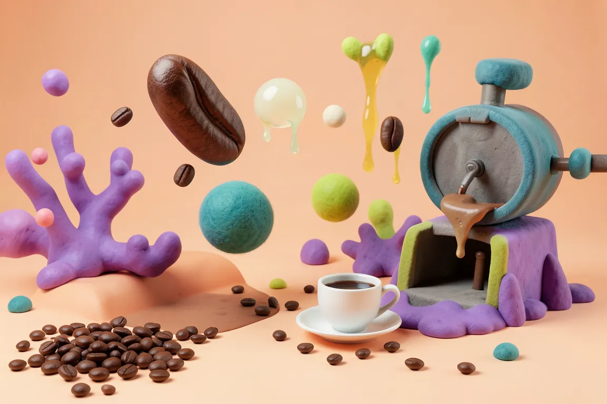

Моушн-дизайн и иллюстрация из странных 3D-рендеров: мягкие кляксы, сюрреальные комнаты, глина, мех, желе и надувные фактуры, иногда жутковатые. Это мир иллюстрации, а не стиль компонентов: глассморфизм и 3D UI оформляют элементы управления, а Blob World заполняет картинку.

Главная идея
Сделайте экран игрушечным миром: мягкие, пересвеченные 3D-тела со странными фактурами несут бренд, а интерфейс вокруг них остаётся простым.
Принципы дизайна
Стройте каждую фигуру из округлых объёмов без острых краёв: минимальный радиус — 24% ширины формы.
Рендерьте одну главную сцену на страницу шириной 1600px и больше, с мягким ключевым светом сверху слева и тенью с размытием 40–80px.
Давайте каждой поверхности один осязаемый материал: глина, мех, желе, надувной пластик или фетр, с видимым зерном при 100% масштабе.
Берите палитру из 3 насыщенных оттенков на пастельном фоне (#FFE9D6) и один кислотный акцент.
Размещайте вокруг героя 3–7 парящих форм на 3 глубинах, с размерами в отношении 1 : 2 : 4.
Набирайте заголовки округлой жирной гарнитурой (насыщенность 600–700) от 56px, а основной текст 18px держите на простом блоке фона.
Зацикливайте движение на 4–8 с: тела сжимаются и растягиваются на 6–12% и дрейфуют на 8–24px.